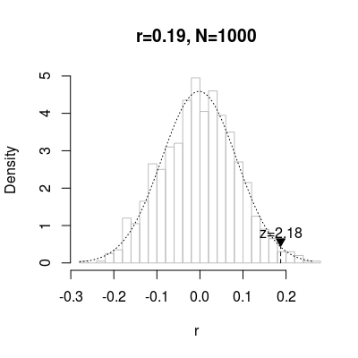

"plot"(mantels, plot = if (nrow(mantels) == 1) "msample" else "r", xlab = "generation", ...)
mantel)Plots the result of one or more Mantel permutation tests. The exact
visualisation used can be controlled with the plot parameter, which
currently supports "r", "z" and "msample".
Red error bars or normal distribution fits signify that a Kolmogorov-Smirnov
test of the randomised r's was significantly non-normal at the level
specified by ks.level in mantel.test. If the veridical r is
plotted in blue it means that it was higher than all other r's generated by
the permutation test.
See mantel.development for more interesting example plots.
plot(mantel.test(hammingdists(allmeaningcombinations(c(2,2,2,2))), suppressWarnings(as.dist(1:16))))
plot(mantel.test(hammingdists(allmeaningcombinations(c(2,2,2,2))), suppressWarnings(as.dist(1:16))), plot="z")